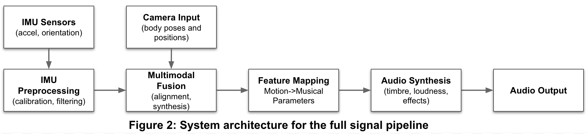

Sensor Fusion Pipeline
Human
IMU sensors
Acceleration, Shake energy, Jerk, Activity Global
Acceleration, Shake energy, Jerk, Activity Global
Pose Estimation
Hand height, Arm extension, Hands spread
Hand height, Arm extension, Hands spread
Single Fused Sensor Pipeline
Real Time Audio Transformation
— 4 of 7 —